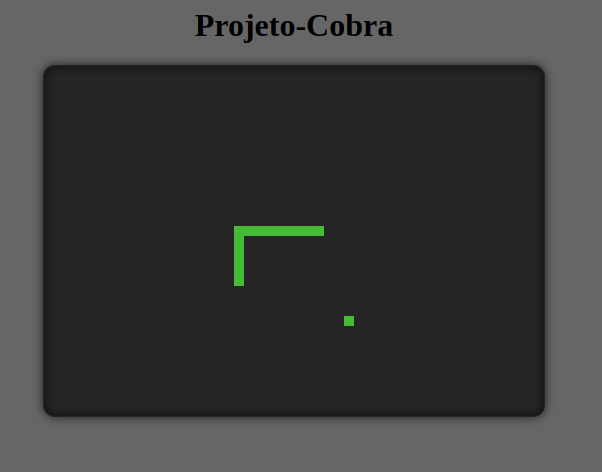

17/03/2025
Projeto-Cobra
Esse é um projeto nostálgico, minha idéia é desenvolver um jogo escrito em Javascript/Html/Css baseado em snake com uma interface semelhante aos antigos monitores de fósforo verde, muito comuns entre a década de 1960 e 1980. Estou trabalhando nele há duas semanas e até o momento consegui fazer a cobrinha andar, ser direcionada no awsd ou setas e comer, com isso aumentando um bloco de seu tamanho total. Ainda preciso definir as regras de colisão. Conforme eu consigo algum tempo livre, eu me dedicarei mais ao seu código.
Um pequeno spoiler do projeto em andamento:
